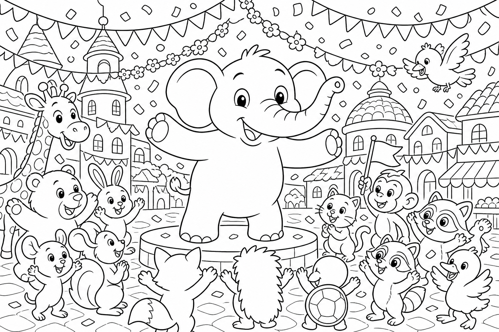

Cerca questa immagine in fondo al libro per colorarla come preferisci. Ricorda: i fuochi d'artificio dolci profumati e il festone centrale fiorito.
C'era una volta un Elefante di nome Franco, che gli amici chiamavano ... EleFranco. Di cognome faceva Franchini. Abitava nella sua accogliente casa nel paesino di FrancaVilla, un borgo che oggi brillava come un cielo di lanterne, dove ogni vicolo portava a un ricordo di aiuto dato e ricevuto, le bandierine sventolavano sui tetti di ogni variante mai vista — marzapane, mulino, spiaggia, bosco — e l'aria sapeva di Festa, cannella e famiglia.
Era il giorno della Grande Festa e EleFranco aveva l'ultima missione: «Devo appendere il festone centrale in piazza prima che suoni la campana! Senza quello, la Festa non è completa.» Si calzò i suoi stivali giganti da Festa, dorati e con la suola che lasciava impronte a forma di stella, prese scale, martello gentile e un sacco di coriandoli e uscì di casa. Tutta FrancaVilla tremava piano di gioia: THUMP THUMP THUMP In piazza c'era già tutta la famiglia del cuore: Franca sorrideva accanto al tavolo dei dolci; Bruno il Castoro aggiustava una bandierina; Nora la Volpe sistemava i bicchieri; Renatolo lo Scoiattolo, Jack il Geco, Raffa la Giraffa, Mietta la Scimmietta, Leda la Lontra, Otis il Gufo, Iris la bambina del giardino e tanti altri amici della Stagione 1 e 2 correvano con nastri e palloncini.
«EleFranco!» gridò Franca. «Manca il festone centrale! E guarda il cielo: sembra aspettare qualcosa!» EleFranco posò il sacco e guardò la piazza.
«Non vi preoccupate. Lo appendo io.» Ma mentre correva dalla scala al palco, dal palco all'asta del campanile, la mente cominciò a vagare: pensò a ogni avventura, a ogni amico aiutato, a quante risate aveva seminato lungo le strade di FrancaVilla. Stava quasi per inciampare quando un palloncino di Pippo il Palloncino gli sfiorò l'orecchio.
Allora l'elefante scosse le grandi orecchie e disse ad alta voce la sua parola magica: "FOCUS!"«Una Festa si fa insieme, un festone alla volta!» Salì sulla scala, scese, risalì — ma i coriandoli nel sacco si rovesciarono dentro i suoi stivali giganti, uscirono a ogni passo e i festoni si aggrovigliarono in un abbraccio colorato attorno al palco centrale. «Ops,» disse EleFranco. «Ora sembro un elefante confetti ambulante.»
Tutti risero. E proprio in quel momento, la campana della piazza emise un rintocco dolce: DONG! I coriandoli rimasti, sollevati dal vento gentile di Vento la Farfalla Blu, esplosero in alto in una pioggia di fuochi d'artificio dolci e profumati — non rumore, ma luce di zucchero filato, stelle di cannella e scintille di miele che scesero sulla piazza senza spaventare nessuno. Il festone centrale, aggrovigliato per caso dagli amici, si aprì come un fiore gigante sopra la testa di EleFranco.
Franca gli passò un lembo del nastro arancione. Bruno il Castoro gli strinse una zampa. Nora gli sistemò il ciuffo. Iris gli disse: «Grazie per ogni avventura.»
La missione era compiuta senza nemmeno usare il martello: la Festa era lì, nel cielo profumato e negli abbracci di tutta FrancaVilla, la famiglia intera riunita sotto un festone di amicizia.
EleFranco capì allora la morale di quella giornata: Chi semina bontà raccoglie una famiglia intera. 🏡
EleFranco alzò la proboscide al cielo scintillante e scoppiò nella sua famosa risata, la risata che aveva attraversato due stagioni di avventure: OH... OH... OH...